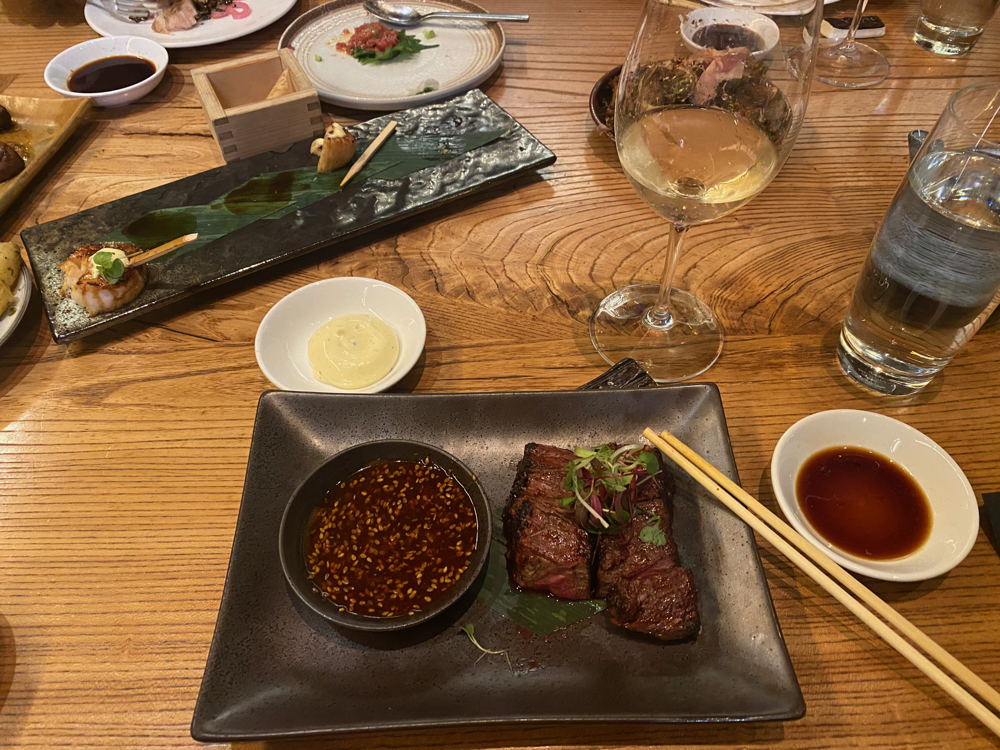

On this page, you will learn about some of my favorite things!
My sophomore year of highschool, for my grandfather's 70th birthday, our entire family flew to Switzerland to celebrate. My grandfather, his wife, and his son, lived all over Europe and recently settled on Switzerland as their permanent location, so that's where they decided to celebrate his birthday.
I had visited Switzerland once when I was younger. My family, mom, dad, and sister, all flew to Switzerland in the winter time to ski. While my parents went to the mountains at our ski resort, my sister and I were placed in the kids club, where we would ski down a hill at the back of the hotel. I still thoroughly enjoyed that trip because of the hot chocolate breaks, fancy shows, and delicious chicken nuggets.
However, the trip my sophomore year, easily topped it. After visiting quaint and unique towns in Switzerland, we went on waterfall excursions, tours of a real castle, and drove to a restaurant at the top of a mountain where I had the best blueberry pie ever. The star of the show was really the scenery though. The mountains were absolutely stunning, and because we visited in late March, we witnessed snow on the mountaintops with newly grown lush vegetation surrounding it.
My favorite sport is lacrosse. My freshmen year of high school, with no experience or knowledge of the sport, my best friend convinced me to try out for our school's team. We both ended up making it, because it was a no-cut team, but I grew to love the sport so intensly that I decided to commit a significant amount of time to improving my ability.
After that season, even though our team went 1-11 and I made varsity as a first time player, I joined a state travel team and competed with them around the country in California, Florida, and Maryland.
After another unsuccesful season, finally came our time to shine. My junior year, I led our team to a 13-4 record, our first sectional win in school history, and I placed top 10 for goals scored in the state.
Now playing on the national team for my club, I hope to have another succesful school season, hopefully winning city championships, and earning All-State Athlete.

The best, and I mean absolute best, meal I have ever had was at Roka Akor, where I devoured a wagyu steak with soy butter and sauteed mushrooms.
My mom and I first discovered Roka Akor during restaurant week, when high end restaurants offer deals and specials.
Although the show stopper is the Wagyu, the appetizers are also scrumptious and some of the greatest foods I've ever eaten. The appetizers include kimchi wagyu dumplings, tuna maki roll, and crispy rice with spicy tuna.